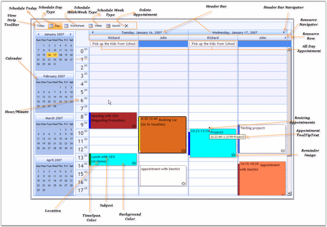

The following screen shot shows the structure of the Schedule control:

Figure 10: Structure of the Schedule Control
Elements and Features of the Control
· Resources: Owners of the appointments are called Resources. A resource can have multiple appointments.
· Appointments: An end-user's specific time interval in the Schedule control refers to an appointment or event. An appointment may contain properties like Subject, Location, StartTime, EndTime, and so on. Normal, All Day, Recurring and Blocked are the types of the Appointments supported by the Schedule control.
· Calendar in Schedule Control: Just like Microsoft Outlook Calendar, the calendar in schedule control allows to select multiple dates to view appointments. Also, it allows to drag the appointments in the calendar.
· Loading Indicator in Schedule Control: The Schedule control now supports a loading indicator during callback. A transparent background and the loading image are used to provide feedback about the callback process.
· Tooltips can be displayed for Schedule cells as well as for Schedule appointments. Also, custom tooltips can be set for Schedule appointments.
· ViewStrip in Schedule control: ViewStrip Toolbar provides options to view the today's date, full work week, weekdays and to delete the appointments. In full week view, it displays all the weekdays in Schedule Control with all the appointments, enabling easy drag-and-drop of appointments.
· Header Bar: displays the date and navigation buttons.